Wei Xiao
I am a Postdoc Associate at the MIT Computer Science and Artificial Intelligence Laboratory since Sep. 2021 advised by Prof. Daniela Rus. I got my Ph.D. degree in Systems Engineering in 2021 at Boston University advised by Prof. Christos G. Cassandras and Prof. Calin Belta.
My research interest includes safety-critical control theory and trustworthy machine learning with applications to robotics and multi-agent systems.
Email: weixy [at] mit (dot) edu [Google Scholar] / [Github] / [LinkedIn]
Recent News
- Our paper using optimal control for CAVs in roundabouts is accepted in T-ITS, 10/2022.
- Our TAC paper regarding safety guarantees under unknown dynamics is now available, 8/2022.
- Wei Xiao, Christos Cassandras, and Calin Belta, Safe Autonomy with Control Barrier Functions: Theory and Applications, Springer Nature, 2023 (in preparation, expected to be finished in Dec. 2022)
Book
Selected Journal Papers
 |
BarrierNet: Differentiable Control Barrier Functions for Learning of Safe Robot Control
Wei Xiao*, Tsun-Hsuan Wang*, Ramin Hasani, Makram Chahine, Alexander Amini, Xiao Li, and Daniela Rus under revision and review, 2022 arXiv 1, arXiv 2 |
 |
Event-Triggered Control for Safety-Critical Systems With Unknown Dynamics
Wei Xiao, Calin Belta, and Christos G. Cassandras IEEE Transactions on Automatic Control (TAC), 2022 arXiv, Bibtex |
 |
Adaptive Control Barrier Functions
Wei Xiao, Calin Belta, and Christos G. Cassandras IEEE Transactions on Automatic Control (TAC), 2022 arXiv, Bibtex |
| 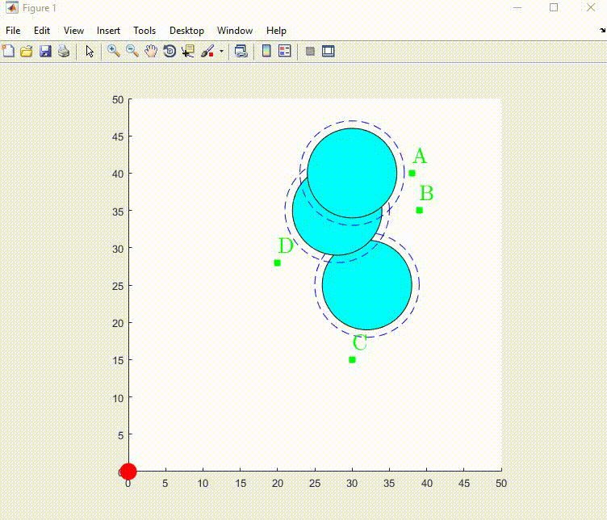 |
High Order Control Barrier Functions
Wei Xiao and Calin Belta IEEE Transactions on Automatic Control (TAC), 2022 arXiv, Bibtex |
{kind=link}
| 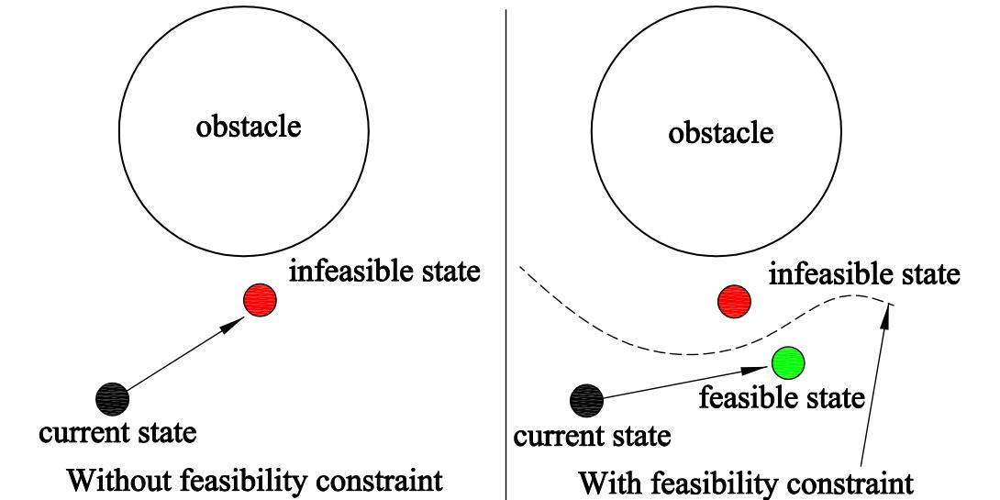 |
Sufficient Conditions for Feasibility of Optimal Control Problems Using Control Barrier Functions
Wei Xiao, Calin Belta, Christos G Cassandras Automatica, 2022 arXiv, Bibtex |
{kind=link}
| 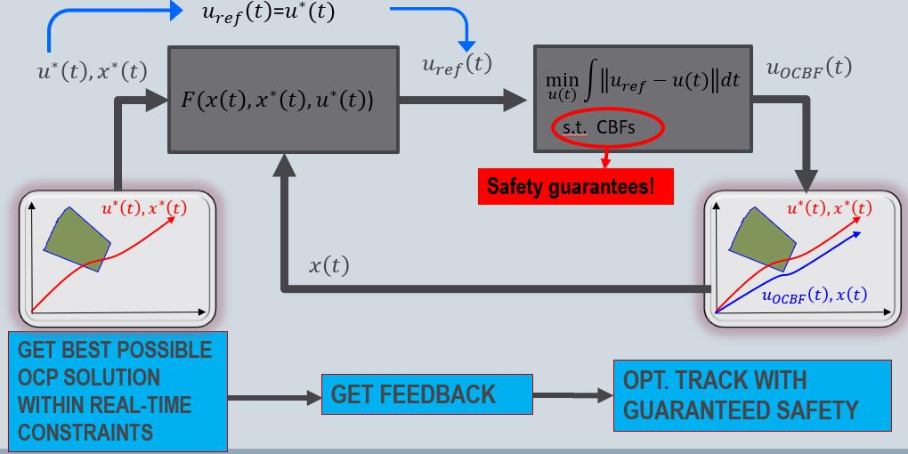 |
Bridging the Gap between Optimal Trajectory Planning and Safety-Critical Control with Applications to Autonomous Vehicles
Wei Xiao, Christos G. Cassandras and Calin Belta Automatica, 2021 Bibtex |
{kind=link}
| 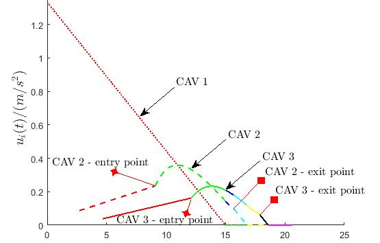 |
Decentralized optimal merging control for connected and automated vehicles with safety constraints guarantees
Wei Xiao and Christos G. Cassandras Automatica, 2021 arXiv, Bibtex |
{kind=link}
| 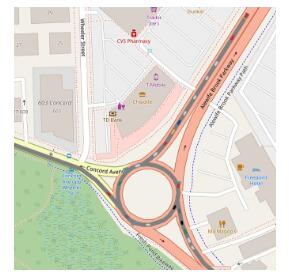 |
Decentralized Time and Energy-Optimal Control of Connected and Automated Vehicles in a Roundabout with Safety and Comfort Guarantees
Kaiyuan Xu, Christos G Cassandras, and Wei Xiao IEEE Transactions on Intelligent Transportation Systems (T-ITS), 2022 Bibtex |
{kind=link}
| 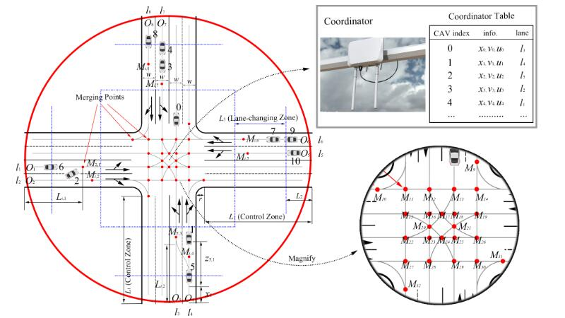 |
A General Framework for Decentralized Safe Optimal Control of Connected and Automated Vehicles in Multi-Lane Intersections
Huile Xu, Wei Xiao, Christos G Cassandras, Yi Zhang, Li Li IEEE Transactions on Intelligent Transportation Systems (T-ITS), 2022 arXiv, Bibtex |
{kind=link}
Selected Conference Papers
 |
On the Forward Invariance of Neural ODEs
Wei Xiao, Tsun-Hsuan Wang, Ramin Hasani, Mathias Lechner, and Daniela Rus Under review, 2022 arXiv |
| 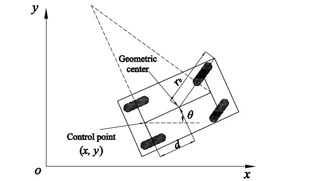 |
Control Barrier Functions for Systems with Multiple Control Inputs
Wei Xiao, Calin Belta, Christos G. Cassandras and Daniela Rus In Proc. of the American Control Conference (ACC), 2022 arXiv, Bibtex |
{kind=link}
| 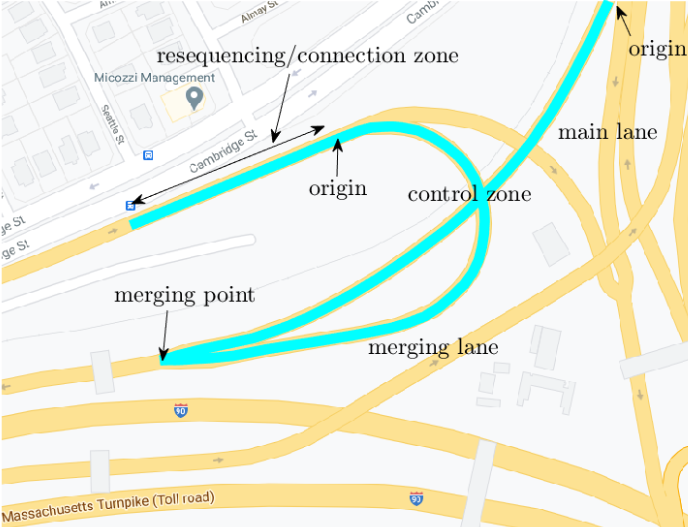 |
Decentralized optimal merging control for connected and automated vehicles on curved roads
Wei Xiao and Christos G. Cassandras In Proc. of 60th IEEE Conference on Decision and Control (CDC), 2021 Bibtex |
{kind=link}
| 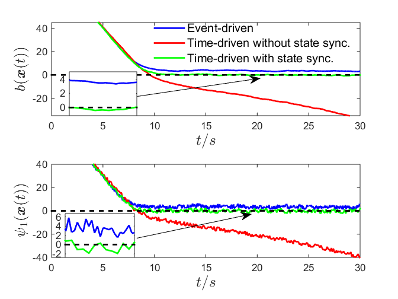 |
Event-triggered safety-critical control for systems with unknown dynamics
Wei Xiao, Calin Belta, and Christos G. Cassandras In Proc. of 60th IEEE Conference on Decision and Control (CDC), 2021 Bibtex |
{kind=link}
 |
Rule-based Optimal Control for Autonomous Driving
Wei Xiao, Noushin Mehdipour, Anne Collin, Amitai Bin-Nun, Emilio Frazzoli, Radboud Tebbens and Calin Belta 12th ACM/IEEE International Conference on Cyber-Physical Systems (ICCPS), 2021 (Best Paper Award Finalist) arXiv, Bibtex |
 |
Feasibility guided learning for constrained optimal control problems
Wei Xiao, Calin Belta, and Christos G. Cassandras In Proc. of 59th IEEE Conference on Decision and Control (CDC), 2020 (Outstanding Student Paper Award, Best Student Paper Award Finalist) arXiv, Bibtex |
| 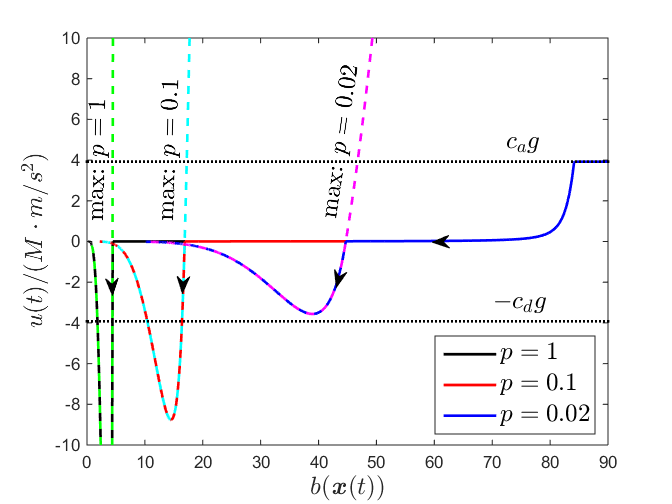 |
Control barrier functions for systems with high relative degree
Wei Xiao and Calin Belta In Proc. of 58th IEEE Conference on Decision and Control (CDC), 2019 arXiv, Bibtex |
{kind=link}
| 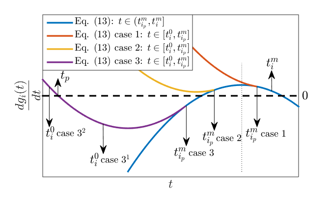 |
Conditions for improving the computational efficiency of decentralized optimal merging controllers for connected and automated vehicles
Wei Xiao and Christos G. Cassandras In Proc. of 58th IEEE Conference on Decision and Control (CDC), 2019 Bibtex |
{kind=link}
| 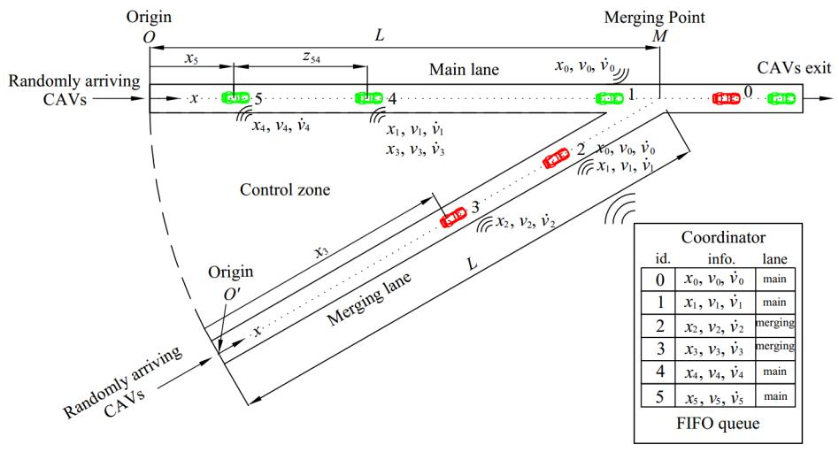 |
Decentralized merging control in traffic networks: A control barrier function approach
Wei Xiao, Calin Belta, and Christos G. Cassandras In Proc. of 10th ACM/IEEE International Conference on Cyber-Physical Systems (ICCPS), 2019 Bibtex , code |
{kind=link}
-
2017.9 - 2021.8, Boston University
Ph.D in Systems Engineering with honors -
2013.9 - 2016.6, University of Chinese Academy of Sciences (Institute of Automation, Chinese Academy of Sciences)
M.Sc in Robotics -
2009.9 - 2013.6, University of Science and Technology Beijing
B.Sc. in Mechanical Engineering with honors
Education
- Boston University Outstanding Dissertation Award, 5/2022
- ACM/IEEE ICCPS 2021, Best Paper Award Finalist, 5/2021
- IEEE CDC 2020, Outstanding Student Paper Award, 12/2020
- Boston University PhD Distinguished Fellowship Award, 9/2017
- iQIYI Young Staff Award, 1/2017
- UCAS National Graduate Scholarship, 5/2015
- Beijing Outstanding Undergraduate Award, 6/2013
Selected Honors
-
Vehicle operation using behavioral rule checks
Radboud Duintjer Tebbens, Calin Belta, Hsun-Hsien Chang, Amitai Bin-Nun, Anne Collin, Noushin Mehdipour, Wei Xiao
US Patent App. 17/497,245, 2022
Patent
-
Funded
Capgemini-MIT Research Project on Trustworthy Machine Learning, 10/2021-10/2024 -
Working
Safe robot learning using BarrierNet
Grants Writeup
-
Reviewing
Journals: IEEE-TAC, Automatica, IEEE-TRO, L-CSS, RAL, IEEE T-ITS, etc.
Conferences: NeurIPS (2022), ICRA (2022-2023), CDC (2019-2022), ACC (2019-2023), etc. -
Organization and Membership
Chair of Lyapunov Methods section at ACC 2022, Atlanta, Georgia
Technical committee of IEEE-CSS on Smart Cities since 9/2021
Professional Activity
-
Teaching Assistant (weekly lectures)
EC103-Linear Algebra, Boston University, Spring 2020
EC103-Linear Algebra, Boston University, Spring 2019 -
Lectures
EC700-Cyberphysical Systems and Autonomous Vehicles, Boston University, 3/22/2021
High order control barrier functions, Department of Automation, University of Science and Technology Beijing, 12/5/2019
Teaching and Lectures
Misc Projects
 |
Manipulator State Grid of China |
| 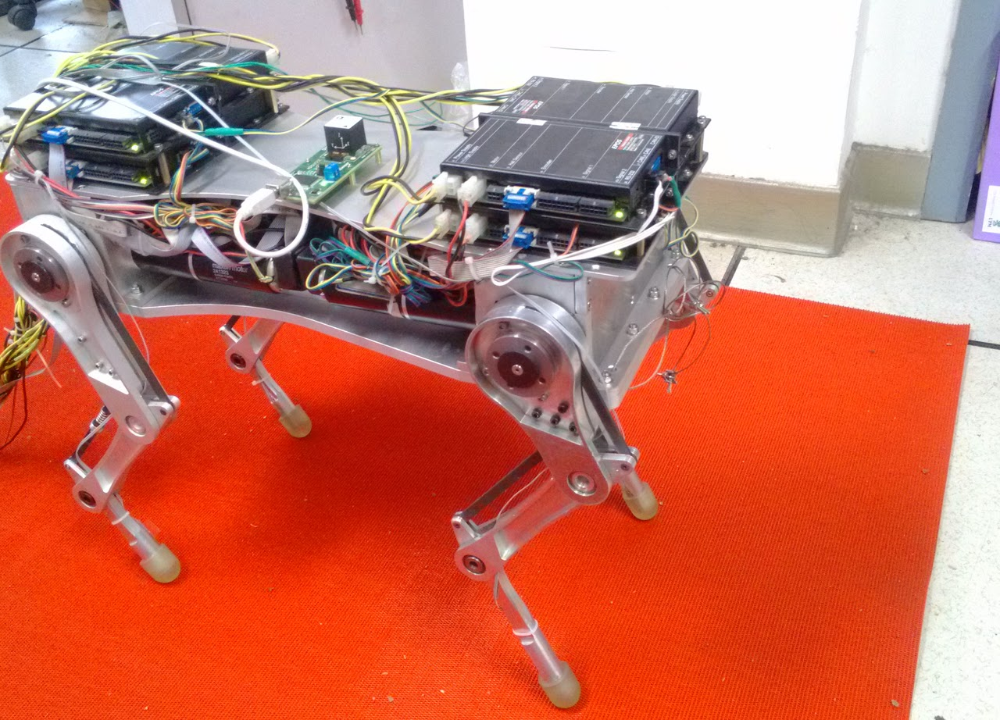 | Quadruped Robot IA, CAS |
{kind=link}
| |
Autonomous Driving MIT |